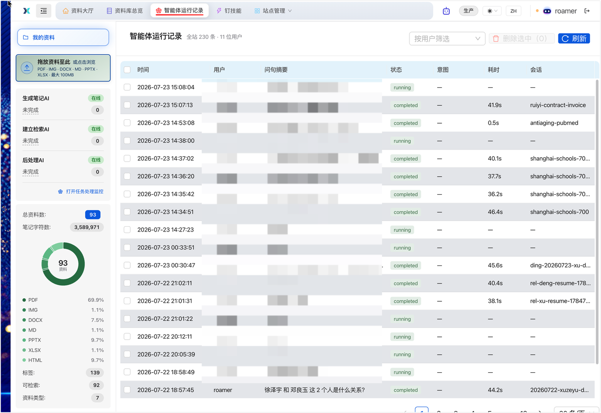
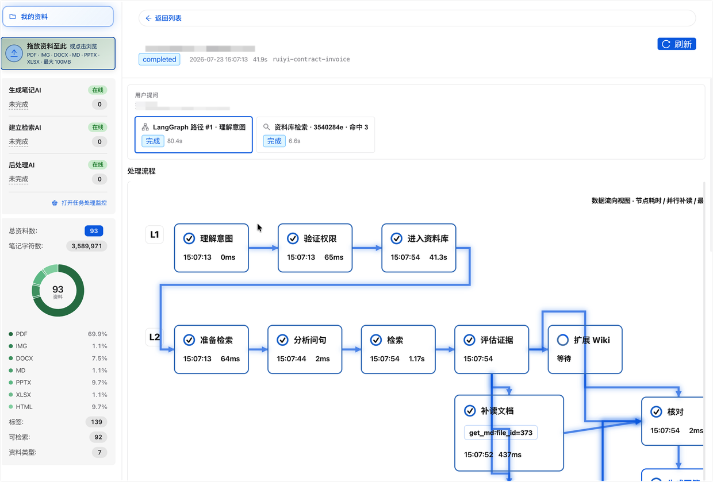
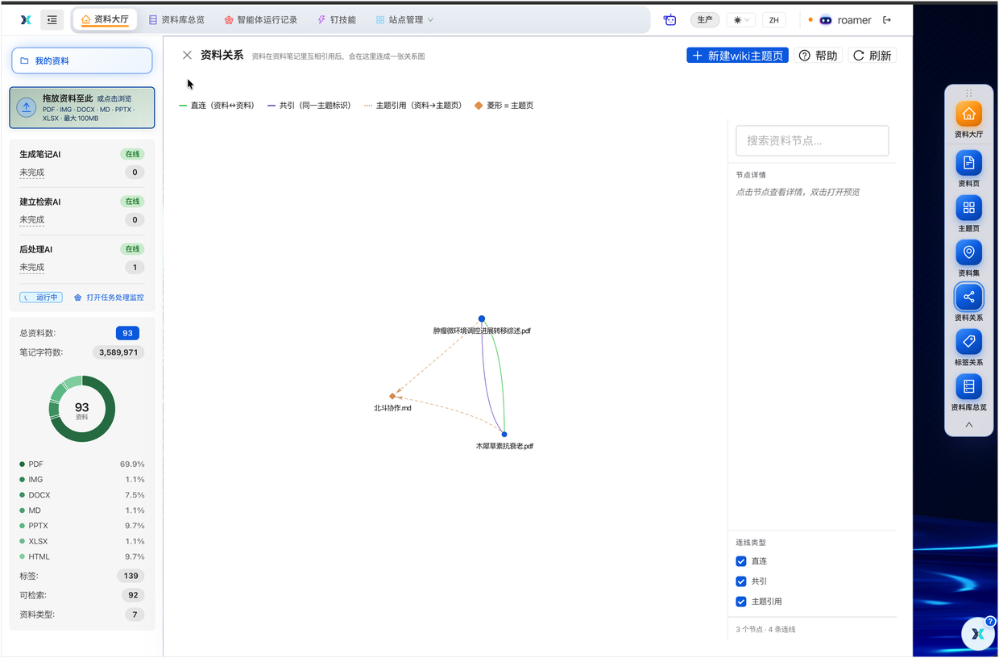
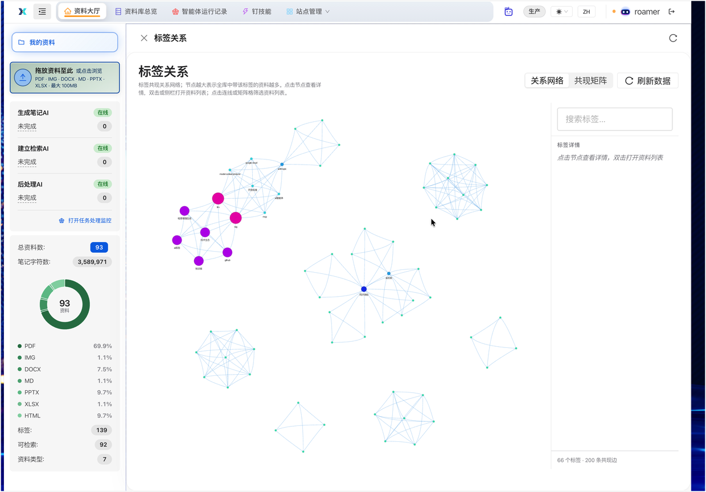

AI Knowledge Base for Agents
FileX turns scattered team documents into searchable, traceable, Agent-readable knowledge assets with RAG retrieval, multi-engine OCR, vector search, wiki graphs, and Ding skill integration.
Capabilities
From document upload to Agent-ready knowledge, every step is designed for scale and transparency.
Docling, MinerU, and Insavlo auto-route by document type. Full pipeline visualization with stage-level status and timing.
Stanford's RAPTOR algorithm recursively summarizes documents into a tree structure for hierarchical retrieval.
OCR results become structured Markdown notes. Agents read them; users edit and enrich them like online notes.
Import, export, and validate Google OKF bundles for cross-platform knowledge asset exchange.
Knowledge base metrics, document relation graphs, and tag heatmaps for insight into your knowledge assets.
LLM routing, embedding engines, parsing strategies centrally managed. Changes take effect instantly, no restart.
Real screens from the FileX platform — from login to knowledge analytics.
Knowledge Base Overview
Document Pipeline
Agent Call Trace


Knowledge Base Analytics


Stack
Access
This GitHub repository is for product promotion and does not include runnable source code. FileX is deployed privately with Docker Compose; contact the author for demos, evaluation, or private deployment.
Contact for Demo